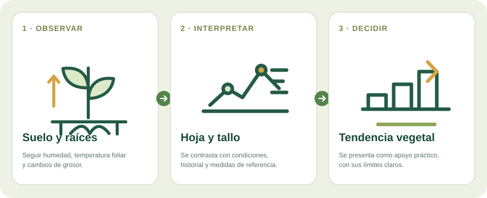

Inicio / Investigación / Sensores de humedad del suelo, temperatura foliar y crecimiento
Línea 03 · TecRural I+D
Fitomonitorización: observar cómo responde la planta
Los sensores pueden ayudar a seguir cambios en el suelo y la planta para entender mejor el riego, el estrés y el crecimiento.
Investigación aplicada y validación con cultivos
Cómo puede convertirse una señal en información útil

Esquema conceptual de la línea de trabajo. No representa un sistema comercial validado; las mediciones y resultados deben comprobarse con datos de campo.
PASO 01SueloSonda cerca de la zona radicular
PASO 02HojaTemperatura como señal contextual
PASO 03Tallo o frutoCambios de diámetro en el tiempo
PASO 04TendenciaComparación con clima y observación
La necesidad
¿Qué problema puede ayudar a resolver?
El clima y el suelo describen el entorno, pero no siempre muestran cómo responde una planta concreta. Medidas repetidas permiten comparar tendencias a lo largo del tiempo.
Cómo funciona
Se instalan sensores en puntos representativos y se comparan sus lecturas con observaciones del cultivo. La humedad del suelo informa sobre el entorno de las raíces; la temperatura de la hoja y los cambios de grosor aportan señales complementarias.
Qué información se observa
Humedad del suelo a una profundidad definida
Temperatura foliar, interpretada con temperatura del aire y condiciones ambientales
Cambios del diámetro de tallos o frutos durante el día y la temporada
Fecha, localización, cultivo y condiciones de cada lectura
Valor para la explotación
Seguir tendencias, detectar cambios respecto al comportamiento habitual y orientar cuándo conviene revisar una parcela o contrastar el riego. Un estudio en olivo combinó temperatura de copa, crecimiento del fruto e índices espectrales con medidas de referencia; los autores indican que hacen falta más validaciones antes de fijar umbrales de actuación.
Servicio potencial de seguimiento para explotaciones que necesitan observar parcelas con más detalle. Puede ofrecerse como kit instalado, cuota de monitorización o piloto de temporada.
Qué hay que validar
Ninguna de estas medidas, aislada, diagnostica por sí sola estrés o indica un volumen de riego. Influyen el cultivar, la hora, el viento, la radiación, el lugar de instalación y el estado del sensor. Cada cultivo requiere criterios de comparación propios.
La información de esta página describe una línea de investigación o desarrollo; no supone que exista un producto validado para todos los cultivos. Toda orientación técnica se contrasta con datos de campo y asesoramiento profesional cuando procede.